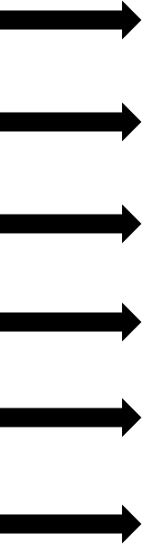

Cape Town Big Six
border="1"
| V&A Waterfront |
 |
Life on the edge of a historical working harbour and five shopping districts |
| Cape Point |
The panoramic views that spread out before you are breathtaking |
| Groot Constantia Wine Farm |
What awaits you is a captivating culmination of South African heritage |
| Kirstenbosch Garden |
This sprawling, landscaped garden covers 36 hectares on the slopes of Table Mountain |
| Robben Island |
From the moment you arrive at the island you will feel the impact of this Heritage Site |
| Table Mountain |
Table Mountain is among the most popular attractions in the world |